Welcome back to the Wizard Fella newsletter! This is the fifth(5)(V) issue
There's a bunch of new stuff so here we go
Last month I finished the graybox of this level and this month it is
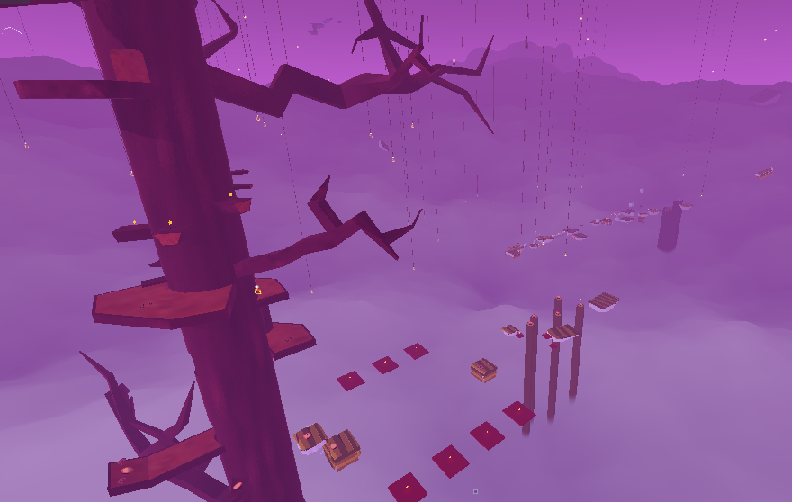
Screenshot 1 of Big Dreams Part 2
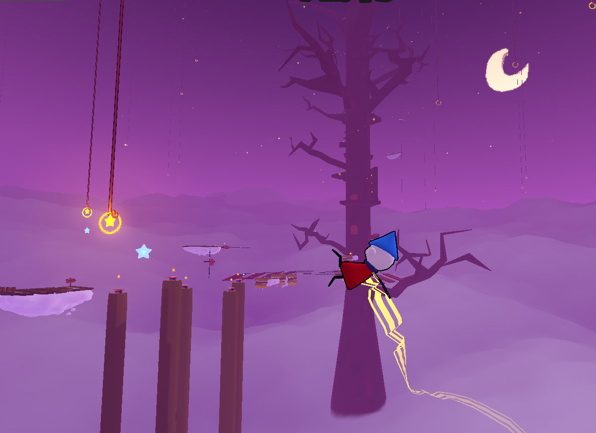
Screenshot 2 of Big Dreams Part 2
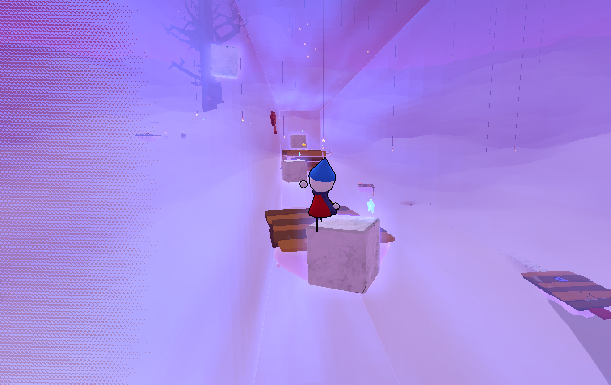
Screenshot 3 of Big Dreams Part 2
The biggest modification from the graybox (besides assets) was that I included some signs that explain the new props that you encounter. Overall I'm really proud of how this level turned out both visually and gameplay wise.
I have also begun work on Part 3, however I've decided to not reveal much about it since it's something thats probably better experienced blindly :)
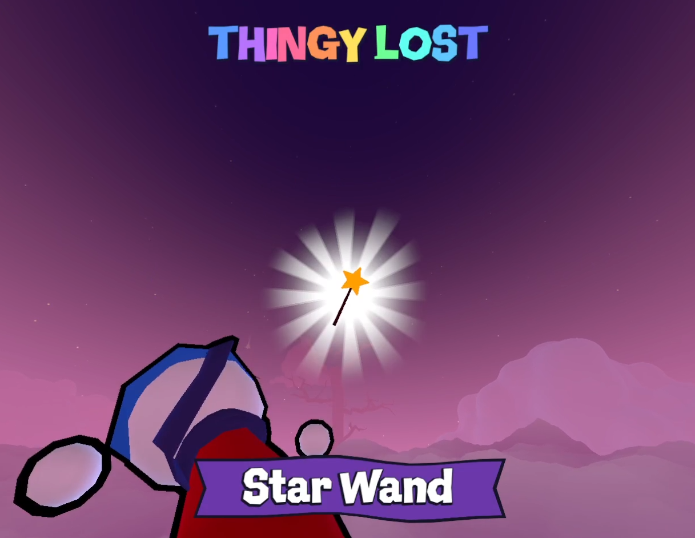
Teaser of Big Dreams Part 3
Grabbables are a new type of object that you can... grab.
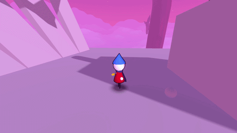
Grabbables in action
You can also throw them by pressing E, or hold it to throw them further!
A little cool technical thing is that I can modify the arm distance for each grabbable, so that arms adjust for bigger/smaller objects.
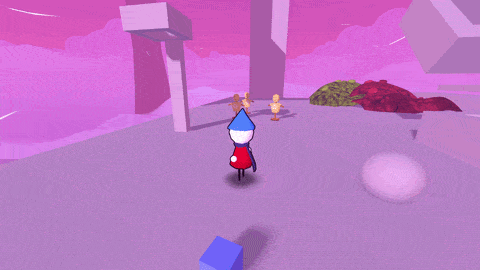
Arms adjusting to grabbables
Buttons are a new prop that could be used for puzzles and stuff.
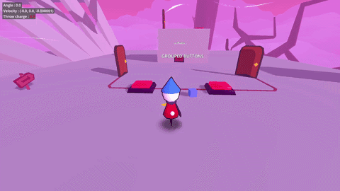
Buttons in action
As seen above, they can be grouped together to create a circuit.
I can also set them to accept only the player or only grabbables or both.
They also can be configured into a switch or a timer.
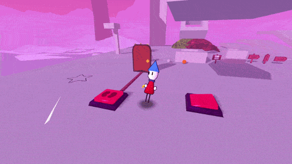
Switch and Timer buttons
Since buttons work using Godot's signal system I can pretty much connect them to anything so I'm already thinking of some interesting puzzle ideas.
This is something that I've ignored for a while but there's finally UI to display your health.
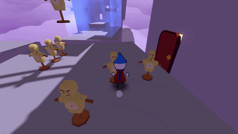
The Heart
I've also added a heal item in the form a nice red apple.
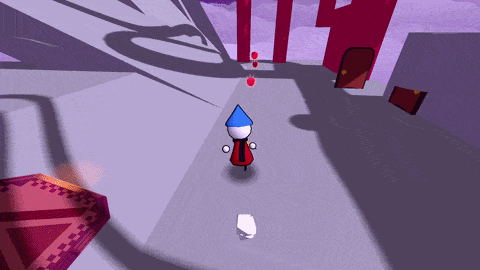
The Apple
I'm still not sure if apples will stay as the general heal item but it's fine for now.
Focus Points
Focus points have been modified to have priority so that I can pick where the player should look.
Focus points with bigger priority will be activated even if a smaller priority is closer to the player.
I'll be using this so that NPC's have bigger priority than something like Grabbables.
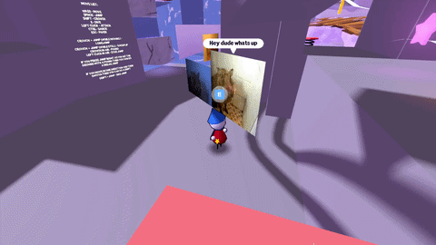
Focus points showcased by the hogs
Star Checkpoints
Up until now there was no real checkpoints in the game. It just saved your position every 10 seconds.
While I did like the auto save it often led to issues and I feel like players were just unsure where they would respawn.
I added Star Checkpoints which light up once they are active and save your position.
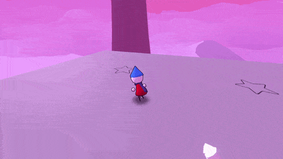
Star Checkpoints showcase
Slipping
This month I introduced slipping. The player will slip if the floor below is above 45 degrees.
If you're idle this will mean you will just start sliding down but if you're running your speed will keep getting slower and slower until you eventually enter a Slide.
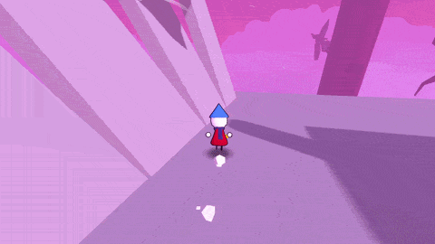
Slipping
This month I finally worked on some things that I've had on the todo list for a while so I'm pretty happy
For this next month the priority is to keep working on Part 3 but maybe I could also start working on the next island, Maple Isle
Ok that's all for now, see you next month and thanks for reading this newsletter once again!
Here's a bit of music from Part 3 but don't tell anyone